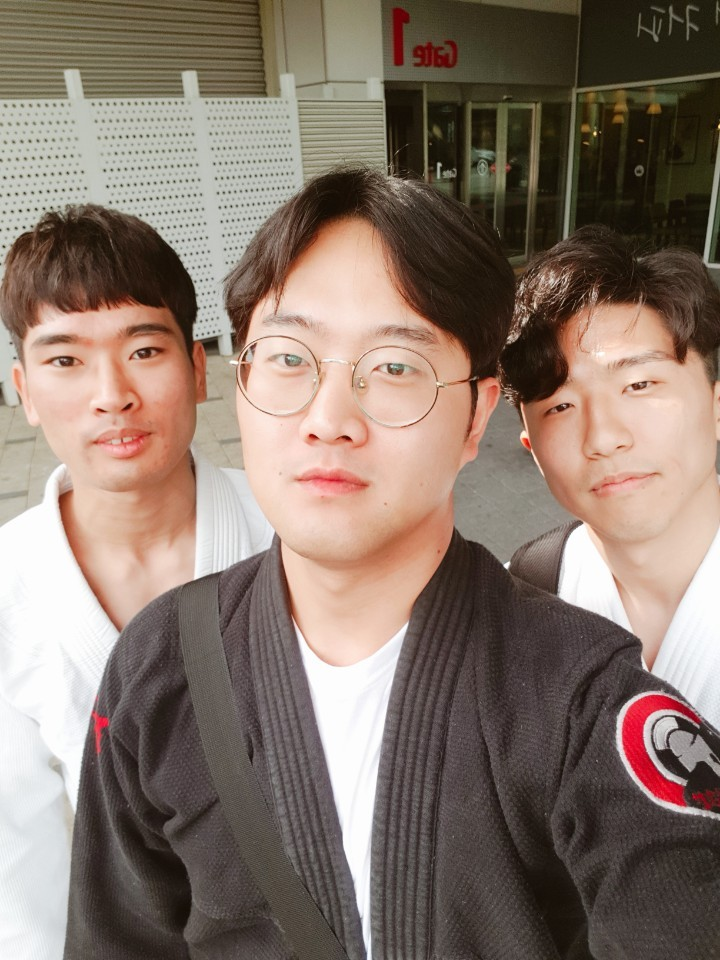

- 삼족오 소개
- 시합 실적
- 소속
삼족오
시합실적
최근 실적으로 2018년 5월27일에 exco에서 진행되었던 대구 쎈짐 컴피티션에서
최진영(white belt advanced-64kg)은메달, 이동화(white belt beginner-64kg)동메달의
성적을 거두었다.
대구 쎈짐 컴피티션
| 최진영 |
white Advanced -64kg |
은메달 |
| 이동화 |
white Beginner -64kg |
동메달 |

이동화 선수 시합 영상
아쉽게도 김기훈 선수는 첫 경기도중 왼쪽 새끼발가락의 인대부상으로 인해 다음 경기를 기약하게 되었다.